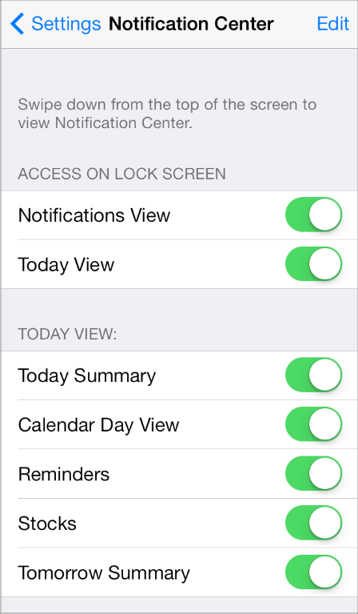
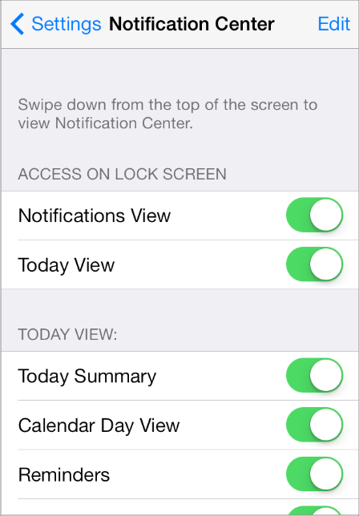
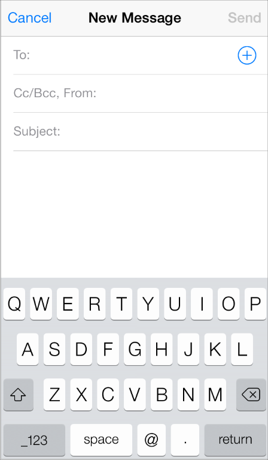
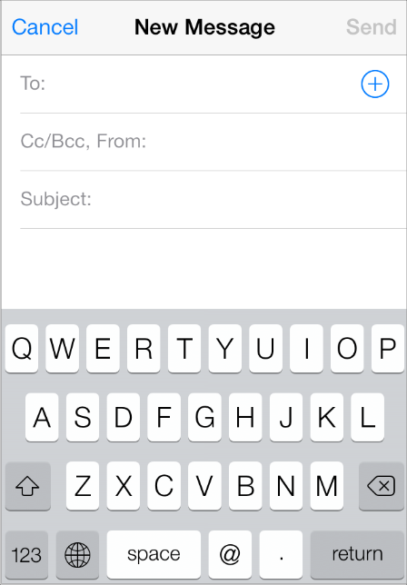
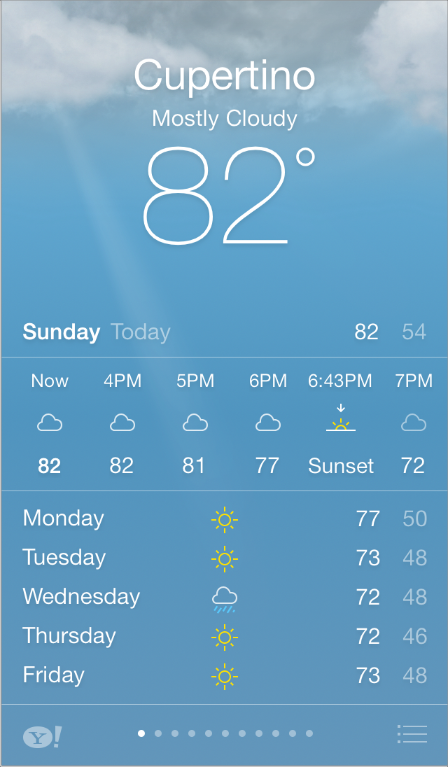
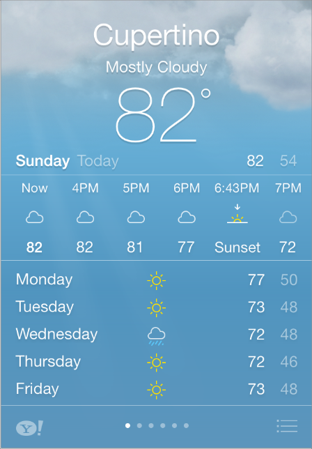
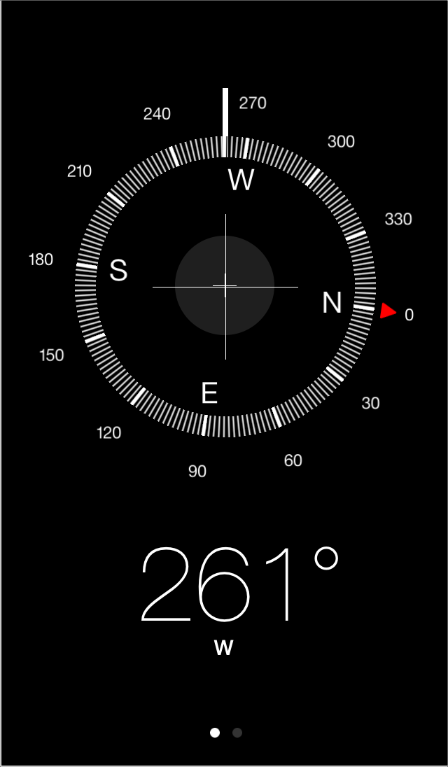
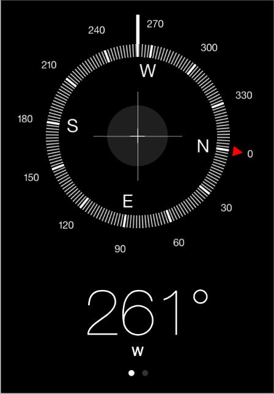

iPhone 5에서 실행하기
아이폰 5에서 잘 보이기 위해서 앱을 새로 디자인할 필요는 없다. 많은 앱들은 가지고 있는 UI를 표시하는 것만으로 좋아 보인다; 몇 몇 앱들은 콘텐트나 배경을 늘려야 한다. 게임이나 커스텀 아트웍을 많이 표시하는 앱들의 경우 가장 잘 보이게 하기 위해서 추가적인 작업을 해야 한다.
아이폰 5의 디스플레이는 다른 아이폰이나 아이팟 터치 장치보다 176픽셀이 더 길다. portrait 방향에서, 추가적인 높이는 표준 테이블 뷰 로우 두개의 높이만큼이다. 예를 들어, Messages는 아이폰 5에서 아이폰 4s보다 더 긴 대화영역을 가진다.
물론, 높이에서 추가적인 176픽셀은 장치가 landscape 방향일때는 측방향의 공간이 된다. 예를들어, 아이폰 5의 Messages에서 (아이폰 4s Messages 아래 그림), UI는 추가적인 공간을 채우기 해서 늘어난다.
위의 Messages 스크린은 중요한 점을 예시한다 : 아이폰 5 디스플레이에 맞추기 위해 만들어진 마이너한 UI 조정은 앱의 기능을 전혀 바꾸지 않는다. 사용자 경험의 일관성 - 이 섹션에서 설명하는 모든 앱에서 명백한 - 은 아이폰 5에서도 중요한 디자인 원칙을 따른다 : 큰 장치 화면은 사용자들이 보고 싶어하는 콘텐트를 더 잘 볼 수 있도록 한다; 이것은 앱의 기능을 더 짜내는 기회를 제공하는 것은 아니다.
앱의 기능을 바꾸지는 않기 때문에, 아이폰 5에서 멋지게 보이기 위해 해야하는 일은 보통 매우 적다. 앱의 UI디자인에 오토 레이아웃을 사용한다면, 할 일은 더 적어질 것이다. 다음 가이드라인은 어떤 UI 변경이 당신 앱에 가장 좋을 지 결정하는 데 도움을 준다.
자동적으로 더 많은 콘텐트가 보이도록 하라. 만약 당신 UI의 일부가 스크린 아래로 숨겨져 있어서 사용자가 스크롤 해야 한다면, 당신의 UI를 더 많이 보이도록 하기 위해 할 일은 없다. Settings 앱에서, 사용자들은 아이폰 5에서 아이폰 4s보다 추가적인 테이블 로우들을 볼 수 있다.
Settings on iPhone 5
Settings on iPhone 4S
콘텐트 영역을 늘려라. 뷰에 콘텐트를 표시한다면, 뷰를 수직방향으로 확장해서 추가적인 콘텐트를 보여주거나 그 뷰에 더 많은 공간을 넣어라. 예를 들어, 사용자들은 iPhone 5의 Mail에서 iPhone 4s 보다 더 큰 메세지 본문 영역을 얻는다.
Mail on iPhone 5
Mail on iPhone 4S
콘텐트 영역 사이에 배경 영역을 늘린다. 콘텐트 뷰 사이의 공간을 늘림으로서 당신의 레이아웃이 보다 편안하게 보이도록 할 수 있다. 예를 들어, iPhone 5에서의 Weather앱은 iPhone 4S 보다 위쪽 영역의 배경을 더 많이 보여준다.
Weather on iPhone 5
Weather on iPhone 4S
필요하다면, 지배적인 시각 요소들을 다시 중앙으로 배치하라. 뷰를 추가적인 공간에 맞게 조정했다면, UI의 중요한 요소가 여전히 중앙에 잘 자리잡고 있는지를 확인하고 싶을 것이다. 이렇게 하는 한 가지 방법은, 화면 위쪽 근처의 영역을 늘린 후 요소들의 중앙을 맞추는 것이다. 예를 들어, 아이폰 5의 Compass는 확자된 배경에 중간으로 유지함으로서 사용자의 초점을 나침반과 방향에 맞춘다.
Compass on iPhone 5
Compass on iPhone 4S
일반적으로, 컨트롤 크기를 키우는 것을 피하라. 만약 앱에서 최소 탭 가능 사이즈를 사용하고 있다면-44*44 포인트 이상-아이폰 5를 위해 그것을 조정할 필요는 없다. 그러나, 콘트롤들 간의 조금 더 많은 공간을 제공하도록 할 수 는 있다.
추가적인 bar나 배너를 표시하는 데 여분의 공간을 사용하지 마라. 사람들은 아이폰 5에서 추가적인 콘텐트를 보기 원한다. 사용자들을 실망시키지 않으려면, 커스텀 버튼 바 또는 배너를 위해 여분의 공간을 활용하려는 시도를 피하라.
Case Study: From Desktop to iOS
Copyright © 2014 Apple Inc. All rights reserved. Terms of Use | Privacy Policy | Updated: 2014-03-10